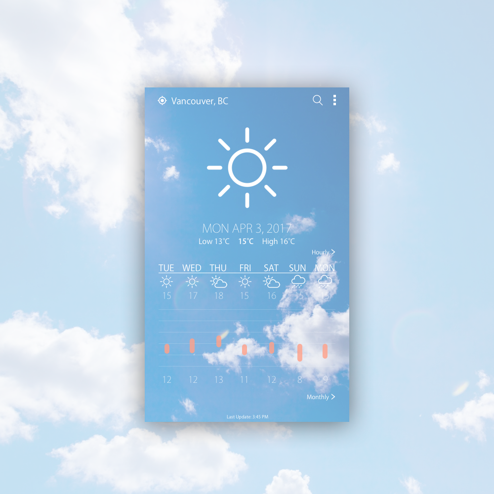

Day 37 - Spring Temperature
Today I got my inspiration from the current Spring weather.
I've always liked the UI on weather networks, the different weather icons, the colours, the way the numbers were displayed, the graphs, everything. So today, I decided to create a Weather app that includes some of those items. I really wanted to create a graph, but then I realized it doesn't actually show much data, and it wasn't that important. Instead, I decided to create a weekly weather report. For users who want to see the daily fluctuations, they will have the option through the "Hourly" button. As much as I wanted to created the weather icons, they would take too much time, so I decided to grab them off of Google.
The main struggle for today was the colours. After placing the blue sky and the white clouds background, I had to change the font and images to white to make them more visible. However, I feel that there was still a lack of differentiation between the background and the lettering, so I decided to dim down the opacity. Also, for the temperature ranges, I chose the colour Orange, because I thought it paired best with blue and white.